Vimos os comandos DML, o famoso CRUD:
Veremos mais detalhes do comando SELECT — consultas avançadas que vão além do básico.
Usaremos duas tabelas para os exemplos:
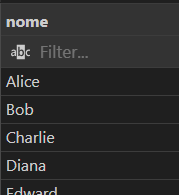
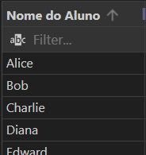
Aspas duplas não são string aqui — servem para nomes de colunas ou tabelas com espaço, maiúsculas ou acento.
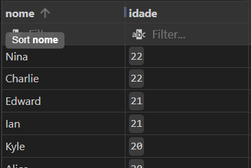
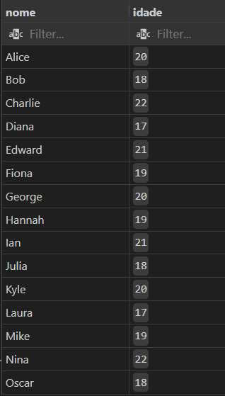
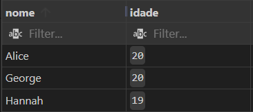
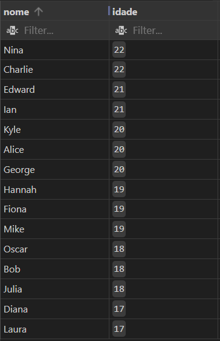
OFFSET 5 pula os primeiros 5 registros
LIMIT 3 retorna apenas 3 registros
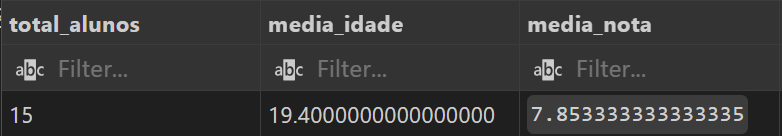
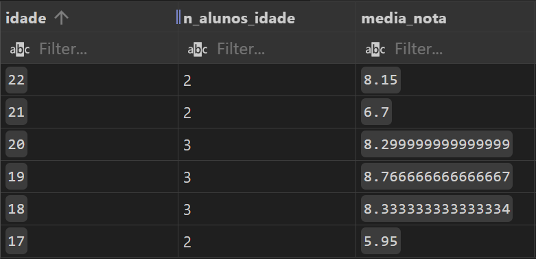
Apenas grupos com mais de 2 alunos:
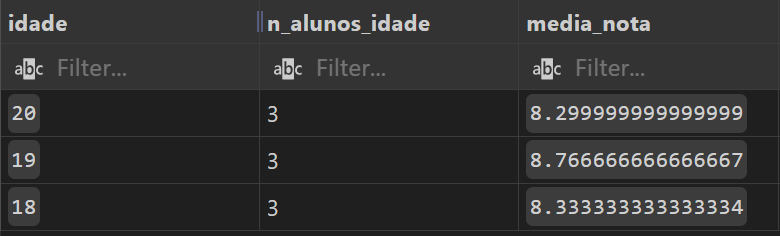
Alunos com nota abaixo da média:
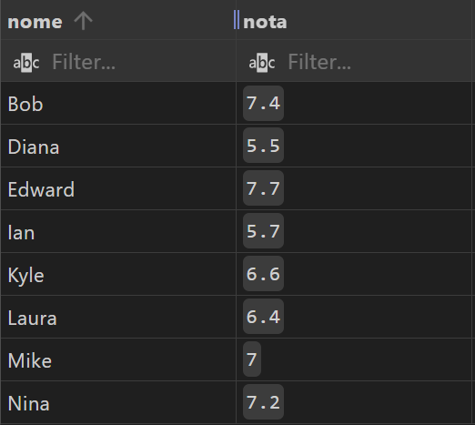
Comparando notas com a média geral:
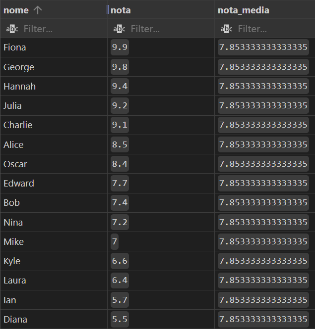
Rank de notas por idade:
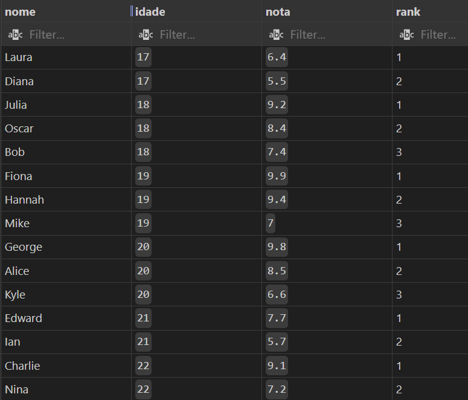
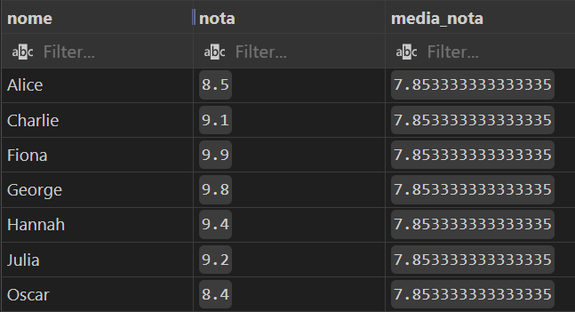
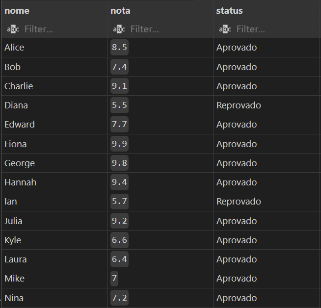
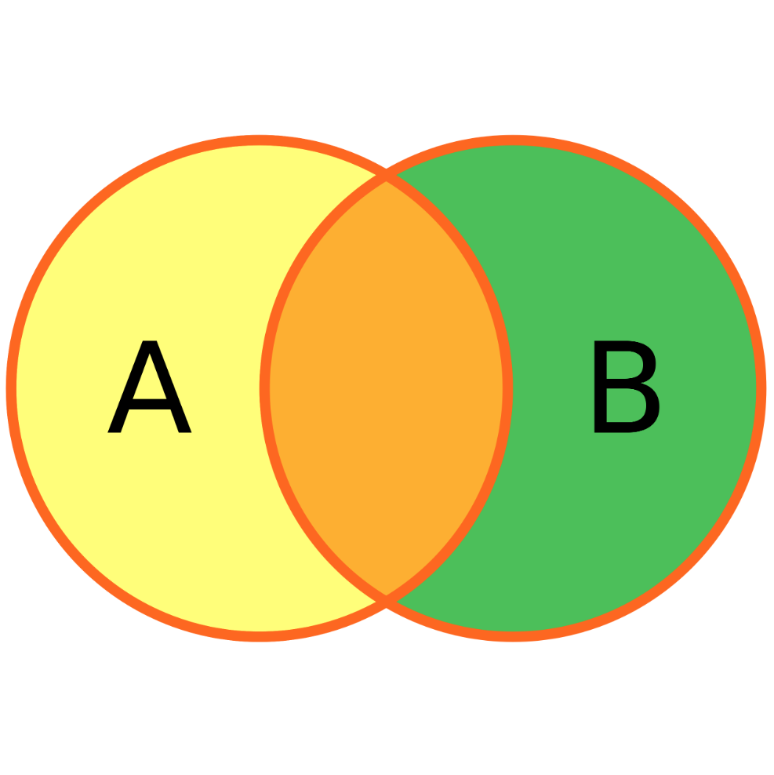
Por que usamos números em vez de nomes?
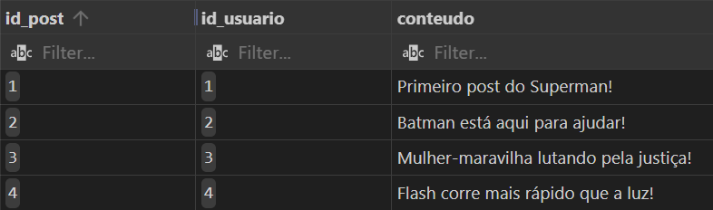
PROBLEMA 1: Se o usuário alterar o nome, preciso atualizar em todos os lugares!
PROBLEMA 2: Espaço em disco — cada caractere gasta 4 bytes. "Superman" = 32 bytes vs Inteiro = 4 bytes.
PROBLEMA 3: Busca — números sequenciais facilitam encontrar a linha sem ler uma por uma.
Juntando com vírgula sem condição:
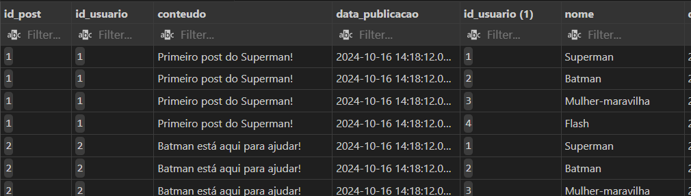
Não é bem isso que eu queria! Cada linha de post é repetida para cada usuário.
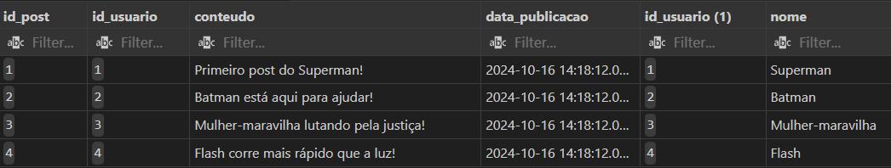
Normalmente criamos aliases (apelidos) para as tabelas. Pode usar AS, mas não precisa!
É a mesma coisa, mas deixa claro que existe uma relação entre as duas tabelas.
Testa a existência de um campo em outra tabela na cláusula WHERE. Geralmente é mais rápido que testar com IN.
É mais útil quando queremos algo que NÃO EXISTS — nesse caso o JOIN não resolveria.
Exemplo: alunos que NÃO estão matriculados em Matemática
Isso retorna alunos matriculados em outras matérias, não os que NÃO estão em Matemática!
Recrie o seu banco de dados da rede social e faça as consultas a seguir: